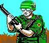
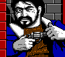
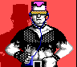
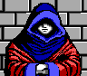
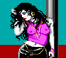
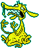
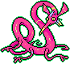
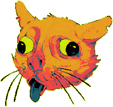

🐕🦺 Salty's Adoptables 🐕🦺
Below you'll find the adoptables that I've found in
my travels on the web. I'll try to check for dead links every so often,
but websites often die faster than I can check, so please let me know if
a link breaks. Click any of the purple titles to travel to the site from
which I obtained the adoptee(s).
☢️ ailis.de ☢️
///
I got these off of a personal website called
K's Cluttered Loft
around ~2010 or so. These were definitely not intended to be
adoptables, but I just thought they were cool. I was really into
playing the original Wasteland game at the time
(the one from 1988 that inspired the Fallout series), and I
remember loving the in-game sprite animations, but my dumb 11 year-old
brain just couldn't figure out how to save them into .gifs. I didn't
really understand the command line or Photoshop at this time, which
was required to dump the animated assets from the game, so I turned to
Google. This guy did some cool upscaling before a lot of people were
educated on that sort of thing. Eventually, I'd like to house the full
collection over on my graphics page.







NINACTI0N
///
I love these adoptables so much. They're so charming, and the
color work is stunning! ninacti0n is one of
my favorite personal websites of all time; their art style is
wonderful, and they're an exceptionally talented musician as well!
Definitely go check out their website.




⭐ TamaNOTchi ⭐
/// My TamaNOTchis are all nicknamed after
my wife, my cats, and I.

Miss Priss

Slugger

Roachette

Meatball

Tuna Baluna
💻🧃 It's Ya Boy Pedro
/// Go visit Pedro's site and get your own random choice of
adoptables. :)